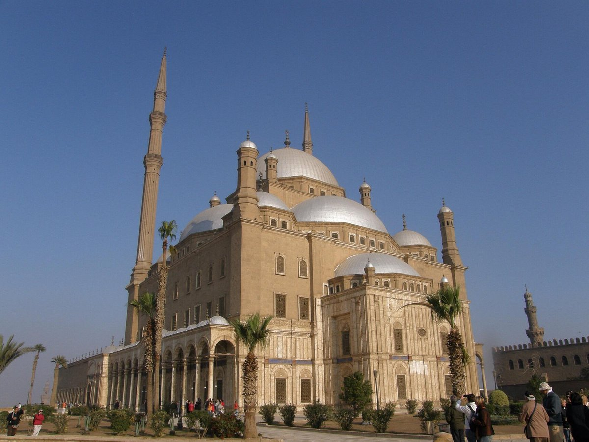
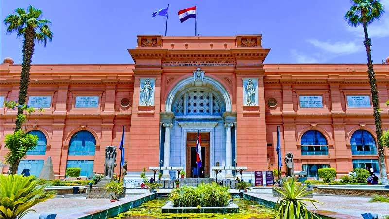
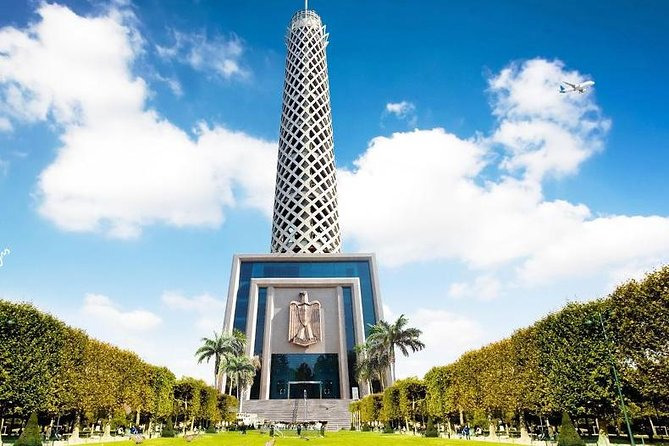
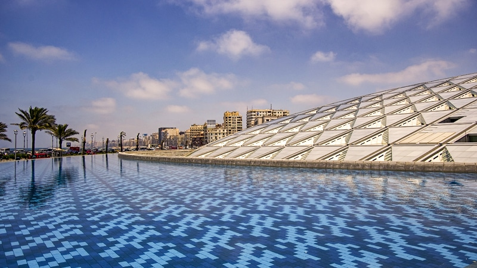
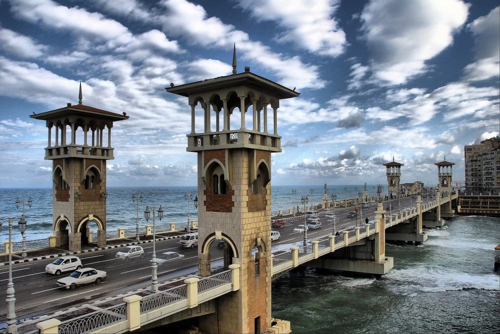
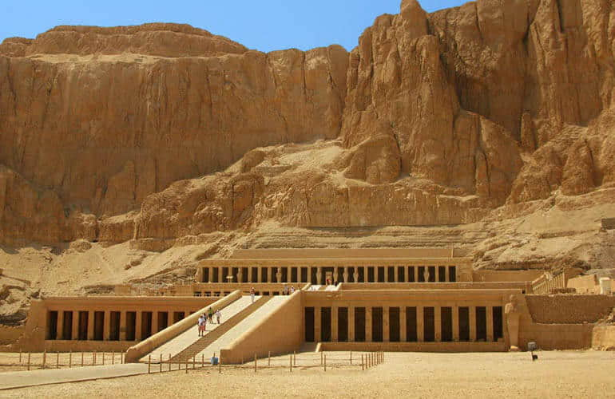

Tourism in Egypt varied between religious, historical,
pharaonic and therapeutic and other know through
this article on one of the most important tourist places in Egypt.
8 places for visiting in Egypt
1-Muhammad Ali Mosque

The Muhammad Ali Mosque or Alabaster Mosque (Arabic: مسجد محمد علي) is a mosque situated in the Citadel of Cairo in Egypt and was commissioned by Muhammad Ali Pasha between 1830 and 1848.
Situated on the summit of the citadel, this Ottoman mosque, the largest to be built in the first half of the 19th century, is, with its animated silhouette and twin minarets, the most visible mosque in Cairo.
The mosque was built in memory of Tusun Pasha, Muhammad Ali's youngest son, who died in 1816.
This mosque, along with the nearby Cairo Citadel, are one of the landmarks and tourist attractions of Cairo
for more information push the button.
2-THE PYRAMIDS OF GIZA
The Pyramids of Giza were built almost 5,000 years ago, at the beginning of human recorded history.
The Great Pyramid of Giza, also known as the Pyramid of Khufu or the Pyramid of Cheops, is the oldest of the three main pyramids on the Giza plateau. This pyramid was built around 2570 BC and it is the oldest of the Seven Wonders of the Ancient World. In fact, it is the only Ancient Wonder to remain largely intact.
Plan on spending a minimum of 3 hours at the Pyramids of Giza. This gives you enough time to go inside the Great Pyramid, visit Panoramic Point, and snap a photo with the Sphinx.
3-Egyption Museum

The Egyptian Museum has the largest collection of Pharaonic artifacts in the world and is the oldest archaeological museum in the Middle East. The museum has a lot of artifacts from the Predynastic Period to the Greco-Roman Period. so it considers one of the landmarks in Egypt
In 1895, the building’s architect was chosen through the first-ever international competition, which was won by the French architect Marcel Dourgnon. Khedive Abbas Helmy II opened the museum in 1902. It is now a historic landmark in downtown Cairo and is home to some of the world’s most beautiful ancient works of art.
4-Cairo Tower

The Cairo Tower is one of Egypt’s most famous and modern landmarks. After seeing all the important ancient Egyptian sites, the Cairo Tower is a great way to get a bird’s-eye view of the city as it is now.
This observation tower is the tallest building in Egypt and North Africa. It is 187 meters high. The building is made in a modern style that makes it stand out from the older buildings in the city. It looks like a lotus plant.
When you go to the observation deck, you can see the whole city in every direction. You can see the Pyramids of Giza, Sakkara, the Citadel, and a lot more from here. When you add a telescope, you can see farther and more clearly.
5-Library of Alexandria

The Library of Alexandria was once the largest library in the world. At its peak, it housed more than 900,000 manuscripts.
In later times, however, its importance declined and its collections were lost due to changes in power and successive invasions.
It is located in the city of Alexandria which was built by Alexander the Great, and the library faces the Mediterranean Sea.
It was founded at the beginning of the 3rd century B.C. by Ptolemy I Soter and enlarged by his son Ptolemy II.
The burning of the library has been attributed to different actors, but no version has been able to be preserved. The only certainty is that it finally disappeared
6-Aswan
Aswan is located on the cataract north of the Nile, Aswan marked the traditional southern border of Egypt with the enemy territory of Nubia, it had great importance in the ancient Pharaonic era on the historical and security side, when we read the ancient Egyptian history we can see that the city of Aswan has contributed a remarkable role in history and battles against enemies who wanted to conquer Egypt, the Nile River also played a very important role in the economy and politics.
it is a popular Egypt famous landmark and sought after by tourists thanks to a large number of ancient monuments and statues that have written a great civilization to study and visit to discover the power of the Egyptian pharaohs and how they managed to build a history to study until the present time.
7-Alexadria

Alexandria city once housed the world’s biggest library and was a jeweled outpost for the Greco-Roman empires. Since then, little remains of the fabled places in the city, but the city has become one of the best Egypt destinations away from the grind and dust of the rest of the Egyptian cities. The Pompey pillar square is a great place to hang out, and the streets are lined with chic cafes in a welcome break from the cuisine elsewhere in Egypt.
8-Valley of Kings

This is one of the famous places to visit in Egypt that can be found at Luxor which lies along the banks of the River Nile. Luxor is famously called the most enormous open air museum ever. The valley of kings lies peacefully on the side of the Nile and contains the natural cut tombs of the past Pharaos like Tutankhamun and Amenhotep. Some of them are still unopened but some can be accessed by visitors. Entering Tutankhamun’s burial chamber designated KV62 is an amazing opportunity to see and feel what it was like in Ancient Egypt.